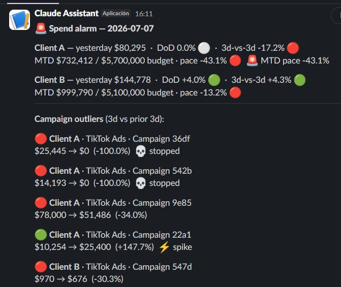

Loymark maneja la pauta de más de 100 clientes en Centroamérica. Su reporting corría con Supermetrics y Google Sheets, y los problemas aparecían recién cuando llamaba el cliente. Así reconstruyeron todo sobre su propio data warehouse.
Loymark es parte de Grupo Garnier, uno de los grupos de comunicación más grandes de Centroamérica. Quinientas personas, con base en Costa Rica, manejando pauta y analítica para más de cien clientes.
Eso significa más de 300 cuentas publicitarias en siete plataformas: Meta, Google Ads, TikTok, LinkedIn Ads, DV360, GA4 y Search Console. Cada una de esas cuentas tiene un presupuesto que cumplir, un cliente que lee el reporte y un analista que responde por ella. A esa escala, la infraestructura de datos deja de ser un tema de back office y pasa a ser aquello sobre lo que se apoya el servicio.
Loymark funcionaba con Supermetrics y Google Sheets. Supermetrics traía cada plataforma a una planilla, y ahí terminaba el recorrido. Un archivo por cliente, un analista por archivo, y arriba de todo eso, nada.
Una planilla es un lugar donde poner números. No opina sobre ellos. A nadie le iba a avisar que una campaña había dejado de invertir: alguien tenía que abrir el archivo correcto, el día correcto, y darse cuenta.
Con diez clientes ese stack funciona. Con cien clientes y más de 300 cuentas publicitarias, se vuelve un impuesto sobre todo el equipo.
El problema era estructural. El stack anterior no tenía desde dónde disparar una alarma, así que el equipo era reactivo por diseño.
Detrics lideró la migración de punta a punta. Llevamos todas las cuentas publicitarias al BigQuery propio de Loymark, consolidamos los 100+ clientes en un único data lake y montamos la capa de alarmas encima.
Loymark mantuvo Supermetrics activo hasta que los pipelines de Detrics ya llenaban BigQuery y estaban validados. El cambio se hizo con la infraestructura nueva probada, así que ningún cliente se quedó esperando un reporte durante la migración.
Las alarmas de Slack y mail disparan sobre el delta entre presupuesto e inversión real. El equipo se entera de una campaña frenada o un presupuesto desbocado la misma mañana que pasa, lo corrige y le avisa al cliente antes de que el cliente pregunte. Las cuentas que antes se escurrían ahora se quedan.
Un data lake centralizado con todos los clientes adentro. Un cambio de métrica, una dimensión nueva, una fórmula corregida: se hace una vez y aplica en todos lados. Eso le devolvió a cada analista cerca del 30% del tiempo que dedicaba a mantener reportes.
Con la data en BigQuery, Loymark conectó agentes de IA directo al warehouse. Ahora las respuestas salen de los números reales de cada cuenta. El equipo de paid media pregunta en lenguaje natural y recibe el análisis y el reporte en minutos, en lugar de encolar el pedido con un analista.
Detrics reemplazó a Supermetrics y consolidó las 300+ cuentas en el BigQuery propio de Loymark. Menos licencias que pagar por plataforma, más capacidad de datos, y un ahorro neto de más de USD 20.000 al año frente al stack anterior.
Cada mañana, antes de que alguien abra un dashboard, la alarma ya está en el canal del equipo y en la casilla: inversión por cliente, variación diaria, acumulado del mes contra presupuesto y las campañas que se frenaron o se dispararon.



Nosotros lideramos la migración. Tu data queda en tu propio BigQuery, con alarmas arriba.